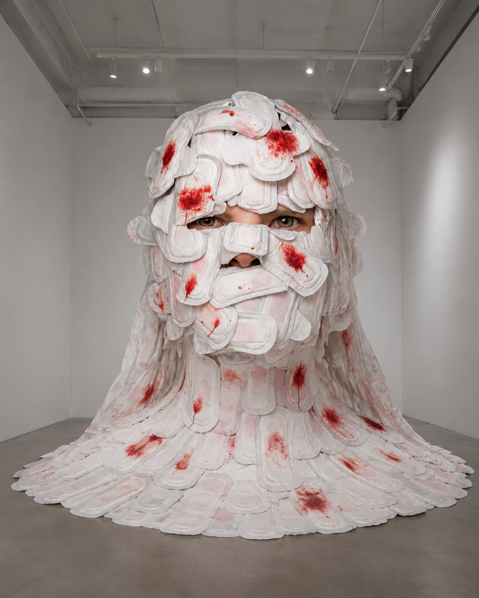

Yuki
Chou
I begin with how people understand, operate, and participate, then translate abstract questions into visible experiences across visual, interactive, and spatial media.
I turn abstract questions into experiences that can be seen, understood, and entered.
From a poster or character system to a two-person installation, I care not only about style but also about how an audience enters a work, what they feel, and what stays with them.
Listen & Speak
An immersive two-person experience about understanding, misunderstanding, and the distortion of information.
Ocean of Masks
A poster series that transforms disposable masks into marine life, reflecting on plastic pollution and ecological harm.
Invisible Mask
A user-research-led exploration of how invisible-mask technology could reshape makeup, sharing, and everyday decisions.
Doujin Booth Teaching Board Game
An educational board game that translates the process of running a fan-market booth into play.

Blood Is Not a Sin
A sanitary-pad installation and multilingual voice platform that replaces menstrual stigma and silence with collective testimony.